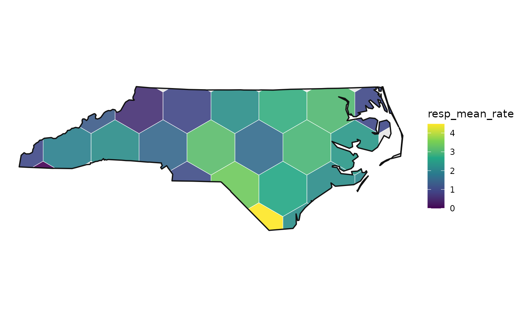

Getting started
Justin Chase
19 September 2026
Source:vignettes/getting-started.Rmd
getting-started.RmdWhat this package is for
You have observations at points and you want values for regions. The usual move is to aggregate onto whatever boundaries exist, and administrative boundaries were drawn for other purposes: a census tract follows a road, a postcode follows a delivery route. Neither follows the field you measured.
This package builds the regions from the distribution of the data, aggregates onto them with standard errors that account for spatial dependence, and scores models on folds that hold out whole regions. The last part matters because a random fold on autocorrelated data returns a number that looks good and means little.
Installing
# install.packages("remotes")
remotes::install_github("elkronos/gis_modeling_toolkit")
# with the vignettes (needs pandoc)
remotes::install_github("elkronos/gis_modeling_toolkit", build_vignettes = TRUE)sf, dplyr, logger and
digest install with it. Everything else is optional and is
needed only for the feature that uses it:
| install | for |
|---|---|
gstat |
variogram fitting: estimate_sac_range(), design
effects, kriging checks |
ranger |
fit_rf_model() and cv_rf()
|
sp, GWmodel
|
fit_gwr_model() and cv_gwr()
|
brms (plus a Stan toolchain) |
fit_bayesian_spatial_model() and
cv_bayes()
|
geometry |
Delaunay triangle tessellations |
ggplot2, patchwork
|
every plot_*() function and every plot()
method |
FNN, Matrix
|
sparse k-nearest-neighbour weights for Moran’s I on large layers |
A missing package produces a message naming it, so nothing fails obscurely.
Getting your data in
Your data arrives through one of two doors, and both end in the same
place: an sf object of POINTs in a projected CRS.
A spatial file
library(sf)
library(spatialkit)
nc <- st_read(system.file("shape/nc.shp", package = "sf"), quiet = TRUE)
c(features = nrow(nc), geometry = as.character(unique(st_geometry_type(nc))))## features geometry
## "100" "MULTIPOLYGON"Those are polygons, and every model here takes points, so reduce
them. coerce_to_points() maps a polygon to a point
guaranteed to fall inside it, using st_point_on_surface(),
a line to its midpoint, and a MULTIPOINT to its centroid. Attribute
columns come along.
counties <- ensure_projected(nc[, c("BIR74", "SID74")])
obs <- coerce_to_points(counties)
obs$rate <- 1000 * obs$SID74 / pmax(obs$BIR74, 1)
c(points = nrow(obs), geometry = as.character(unique(st_geometry_type(obs))))## points geometry
## "100" "POINT"Hex and square grids need a study area. Dissolving the source
polygons is the usual way to get one, and st_read() a
separate outline if you have it.
A table with coordinate columns
tab <- data.frame(
lon = st_coordinates(st_transform(obs, 4326))[, 1],
lat = st_coordinates(st_transform(obs, 4326))[, 2],
births = obs$BIR74,
sids = obs$SID74
)
head(tab, 2)## lon lat births sids
## 1 -81.49692 36.41746 1091 1
## 2 -81.12964 36.47430 487 0
pts_ll <- st_as_sf(tab, coords = c("lon", "lat"), crs = 4326)
pts <- ensure_projected(pts_ll)crs = is required and cannot be guessed. Lon/lat from a
GPS, a web API or a geocoder is almost always EPSG:4326. If the file
came from a municipal or national dataset, its metadata names the CRS,
and it is frequently something else.
What the numbers are in
Every distance in this package is in the units of the CRS the analysis runs in. A block size, a GWR bandwidth, a variogram range and a Gaussian process length-scale are all distances. Hand any of them a number in degrees when the data are in metres and the result is quietly wrong by a factor of about 100,000.
ensure_projected() is what prevents that. Watch what it
did to the counties above:
st_crs(counties)$input## [1] "+proj=aea +lat_1=34.333391 +lat_2=36.138461 +lat_0=35.559467 +lon_0=-79.400417 +datum=WGS84 +units=m +no_defs"
st_crs(counties)$units_gdal## [1] "metre"nc.shp arrives in NAD27, a geographic CRS in degrees.
ensure_projected() chose a local Albers equal-area
projection and logged why: across this extent the UTM zone distorts
distances by 0.20 percent at worst and the Albers projection by 0.01
percent. Pass target_crs to override the choice.
A layer with no CRS at all is decided by a documented heuristic. If the bounding box fits the lon/lat envelope and the coordinates look like degrees, the layer is read as EPSG:4326 and projected, with a warning saying so. Set the CRS yourself if your data are planar and happen to fall in that envelope.
raw <- st_as_sf(data.frame(lon = c(-81.5, -81.1), lat = c(36.4, 36.5)),
coords = c("lon", "lat"))
st_crs(ensure_projected(raw))$input## [1] "EPSG:32617"Two layers that must line up go through harmonize_crs(),
which returns both in a common CRS:
pair <- harmonize_crs(obs[1:5, ], st_transform(boundary, 4326))
st_crs(pair$a) == st_crs(pair$b)## [1] TRUEThe pipeline, end to end
Five calls, each covered in depth by one of the other vignettes.
# 1. How many cells can these data support?
lv <- determine_optimal_levels(obs, max_levels = 40)
# 2. Draw them.
tess <- build_tessellation(obs, boundary = boundary, method = "hex",
approx_n_cells = 25, quiet = TRUE)
# 3. Put every observation in a cell.
asg <- assign_features_to_polygons(obs, tess$cells)
# 4. Aggregate, with standard errors corrected for within-cell correlation.
cells <- summarize_by_cell(asg, "rate", cells_sf = tess$cells, deff = "kish")
# 5. Build folds that hold out whole regions.
folds <- make_folds(obs, k = 4, method = "block_kfold", seed = 1)
c(candidate_levels = lv[1], cells = nrow(tess$cells),
folds = folds$k, blocks = folds$params$blocks_used)## candidate_levels cells folds blocks
## 5 31 4 11
names(cells)## [1] "poly_id" "n" "resp_mean_rate" "..sd_resp_rate"
## [5] "..se_resp_rate" "cell_weight" "geometry"
head(st_drop_geometry(cells)[, c("poly_id", "n", "resp_mean_rate",
"..se_resp_rate")], 4)## poly_id n resp_mean_rate ..se_resp_rate
## 1 1 2 0.9737098 1.127417
## 2 2 1 0.0000000 NA
## 3 3 5 1.9399276 1.029025
## 4 4 NA NA NAEvery aggregate comes with a count and a standard error. The
..sd_ and ..se_ columns are prefixed so they
cannot collide with a column of your own.
plot_tessellation_map(cells, boundary = boundary, fill_col = "resp_mean_rate")
Cross-validating a model over those folds is
cv_spatial() with your own learner, or
cv_rf(), cv_gwr() and cv_bayes()
for the three backends the package ships.
Where to go next
| vignette | covers |
|---|---|
vignette("resolution") |
choosing the cell count, and the criteria that disagree about it |
vignette("spatial-cross-validation") |
fold schemes, block sizing, and reading a CV result |
vignette("diagnostics") |
residual autocorrelation, aggregation standard errors, kriging adequacy, area of applicability |
vignette("spatialkit_nc_demo") |
the whole pipeline end to end, with maps |
vignette("reporting") |
handing the regions to someone else, and what to report |
?spatialkit walks the pipeline and names the function
for each step.